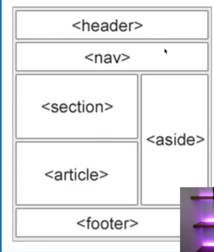

/*tags que o sistema identifica as posições no site*/
<header>cabeça do site</header>
<nav>parte de navegação</nav>
<section>sessões no site</section>
<aside>parte laterais do site</aside>
<article>parte de artigos do site</article>
<footer>parte inferior do site</footer>
<main>parte principal do site</main>
